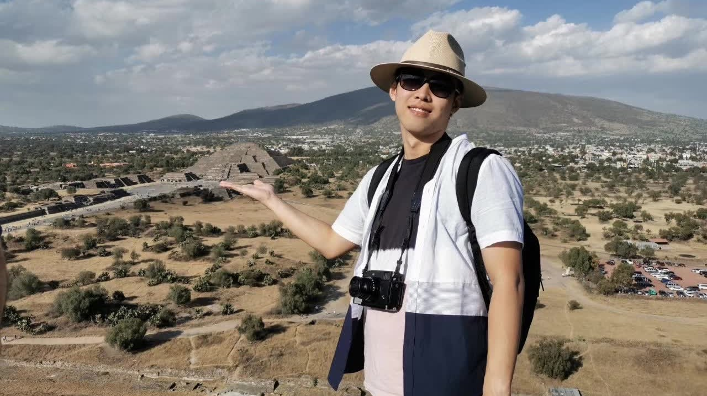
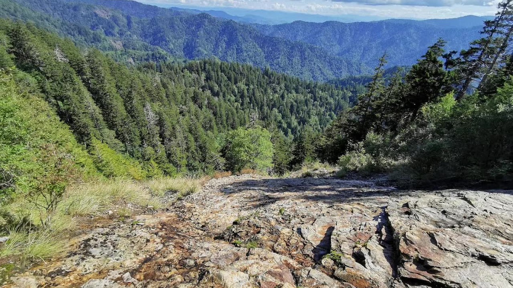
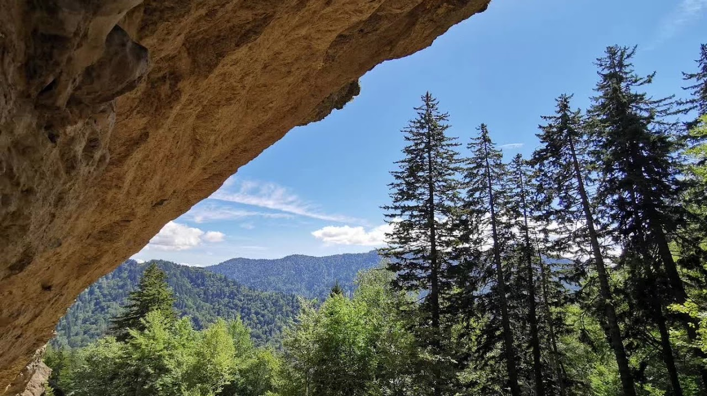
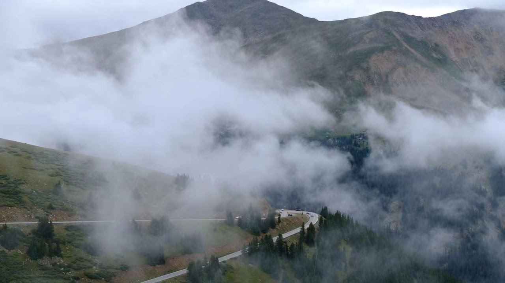
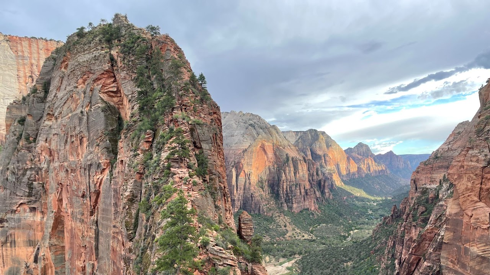
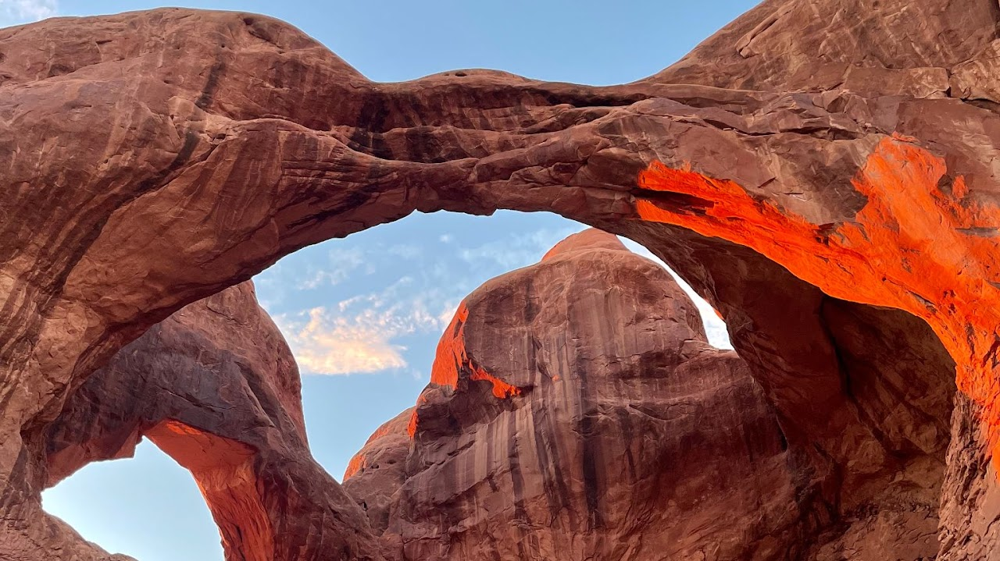

More about me
- My name in Chinese is 唐瑞祥, and I was raised in Hunan Province, an area famous for its spicy culinary tradition known as 湘菜. I have been playing the violin for seven years; while I'm not a professional, it has opened the door to the world of music for me.
- During my undergraduate years, I served as the president of the Cycling Club at Tsinghua University. We held weekly cycling training sessions on the outskirts of Beijing, and organized annual long-distance trips to a variety of destinations, such as Qinghai Lake.
- I am also an outdoor enthusiast with a particular passion for hiking. One of my hobbies is collecting stamps from National Parks. To date, I have visited national parks in Louisiana, Colorado, Utah, Washington, North Carolina, and Florida.
Mexico: In 2019, I traveled to Mexico and was captivated by the enigmatic allure of Maya culture.

North Carolina: In 2020, I traveled to North Carolina and visited Great Smoky Mountains.


Colorado: During the summer of 2022, I embarked on an adventure to Colorado with my family, where we explored three of the state's national parks. We plan to return again in the winter.

Utah: In 2023, I journeyed to Utah with my family and had the privilege of exploring all five national parks in the state. Personally, Bryce Canyon National Park stood out as my favorite.

